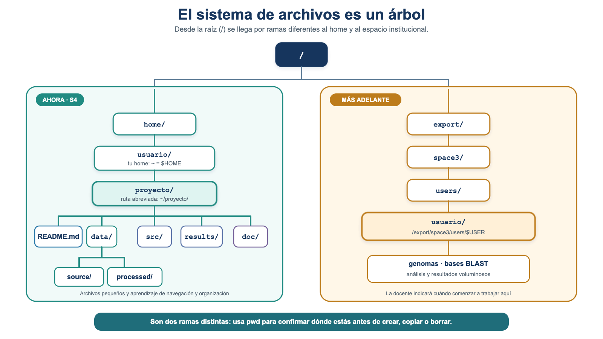
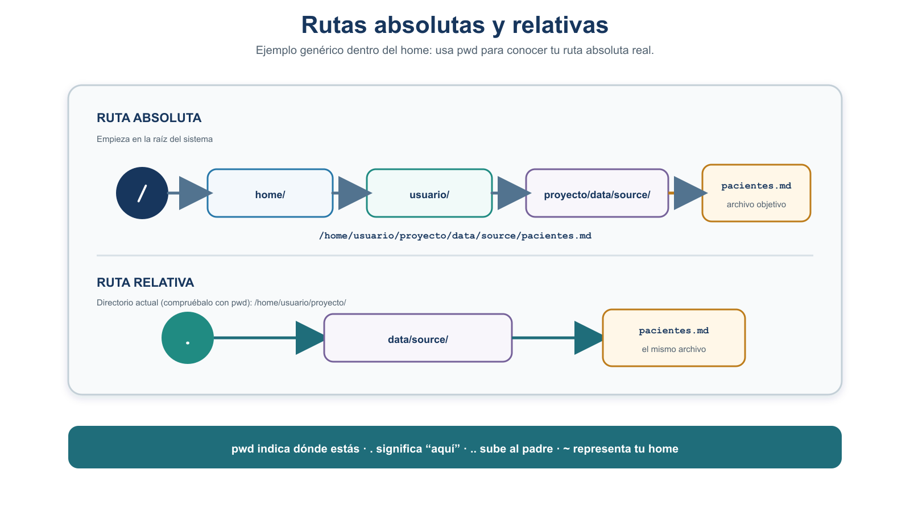
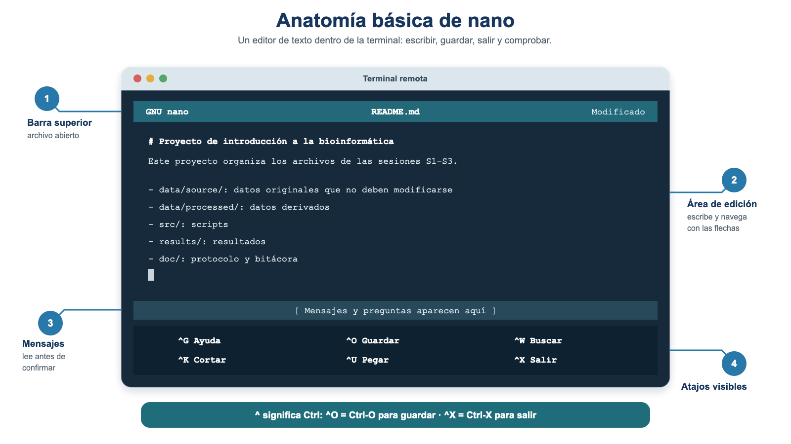

S4 — Navegar: el sistema de archivos, su organización y su edición
Este documento se lee antes de la sesión S4. En el taller construiremos en vivo la estructura real del proyecto sobre el servidor, con repetición del estudiante. Trae tu primer intento y tus dudas. Al final hay una práctica (Tarea 3) con tres momentos: antes de clase, durante el taller y entrega final.
Segundo módulo de la Unidad 2. En S3 aprendiste a conectarte por SSH y a transferir tus archivos al servidor comprobando su integridad. Hoy aprenderás a moverte por el sistema de archivos y a crear y organizar directorios y archivos para levantar, por primera vez, la estructura real del proyecto en tu espacio del servidor y colocar dentro de ella los archivos que ya transferiste.
El problema que resolveremos hoy
Los archivos que transferiste en S3 (pacientes.md, pacientes-metadatos.md y protocolo.md) quedaron juntos en tu home (~) del servidor. Tu tarea de hoy es crear la estructura que diseñaste en la Unidad 1 (Tarea 2, S2), colocar cada archivo donde corresponde y comprobar que los datos originales no cambiaron en el proceso.
En la Unidad 1 (S1–S2) hiciste un trabajo que hoy vas a materializar:
- En S1 iniciaste
protocolo.mdy tu reporte de lectura (Tarea 1). - En S2 trabajaste
pacientes.md, sus metadatos (pacientes-metadatos.md), tubitacora-ia.mdy el diseño conceptual de la organización del proyecto (Tarea 2). Ese diseño quedó en papel: todavía no construiste la estructura con Unix. - En S3 transferiste a tu home (
~) del servidorpacientes.md,pacientes-metadatos.mdyprotocolo.md, y comprobaste su integridad con checksums. - En S4 (hoy) creas por primera vez la estructura real en el servidor y colocas dentro de ella los archivos ya transferidos.
La estructura final a la que queremos llegar es:
proyecto/
├── README.md
├── data/
│ ├── source/
│ │ ├── pacientes.md
│ │ └── pacientes-metadatos.md
│ └── processed/
├── src/
├── results/
└── doc/
├── protocolo.md
└── bitacora-ia.mdEn S3 solo transferiste tres archivos (pacientes.md, pacientes-metadatos.md y protocolo.md). Tu bitacora-ia.md todavía vive en tu computadora. Para completar la organización tendrás que transferirlo al servidor; lo haremos en el taller como aplicación de scp (§9). No supongas que ya está disponible: primero compruébalo con ls.
Ficha del módulo
| Elemento | Descripción |
|---|---|
| Sesión | S4 (2 h) |
| Tema | Sistema de archivos, navegación, organización del proyecto en el home y edición en el servidor |
| Competencia | B — Dominio del entorno Unix y del cómputo científico |
| Resultado (plan) | Navega el sistema de archivos y opera archivos y directorios; edita en el servidor |
| Consulta previa (plan) | Este módulo autocontenido; L3-shell, diapositivas 39–60, queda como consulta complementaria |
| Lectura base | Buffalo (2015), Cap. 3 (navegación y manipulación de archivos) |
| Lectura de consulta | Shotts (2019), caps. 2–4 (navegación y manipulación de archivos y directorios) |
| Tarea del plan | Tarea 3 — estructura de directorios del proyecto en el servidor |
| Evidencia | Estructura reproducible del proyecto en ~/proyecto/, con los archivos de S2–S3 en su lugar, verificada con tree/ls -R y con checksum, y protocolo.md actualizado |
Relación con la Unidad 1 y con el proyecto integrador
En la Unidad 1 diseñaste la organización de un proyecto reproducible (Noble, 2009). Aquí la materializas en el servidor: creas las carpetas reales donde vivirán tus datos, scripts y resultados durante todo el curso, y colocas en ellas los archivos que ya produjiste y transferiste. La estructura que construyas hoy es la que usarás en las Unidades 3 a 6.
Resultados de aprendizaje
Al terminar S4, el estudiante es capaz de:
- Describir la estructura en árbol del sistema de archivos y el papel de
/,~y el directorio actual, y distinguir el home del espacio institucional/export/space3/users/$USER. - Distinguir rutas absolutas y relativas y usar
.,..y~, entendiendo que una ruta relativa parte del directorio actual. - Navegar entre directorios con
pwd,lsycdusando ambos tipos de ruta, tras comprobar el contexto conhostname,whoamiypwd. - Crear y organizar archivos y directorios (
mkdir,mkdir -p,touch,cp -i,mv -i) y eliminar de forma segura (rm -i,rmdir) dentro de una carpeta de prueba. - Construir directamente
~/proyecto/con la estructura canónica y colocar en ella los archivos transferidos en S3. - Verificar la estructura con
treeols -Ry comprobar la integridad depacientes.mdcomparando su checksum con el registrado en S3. - Transferir con
scpun archivo faltante (bitacora-ia.md) desde el equipo local directamente a~/proyecto/doc/; reconocerrsynccomo herramienta de consulta para transferencias grandes. - Editar en el servidor con
nanopara completarREADME.mdy actualizardoc/protocolo.md.
Antes de la sesión
| Elemento | Detalle |
|---|---|
| Lectura obligatoria | Este módulo completo; contiene la preparación conceptual necesaria para llegar al taller. |
| Consulta dirigida | Buffalo (2015), Cap. 3 — apartados de navegación y manipulación de archivos (~20 min). |
| Lectura de consulta | L3-shell, diapositivas 39–60, y Shotts (2019), caps. 2–4 (opcionales para profundizar). |
| Preparación técnica | Conéctate al servidor (habilidad de S3). Ten a la vista el diseño de la estructura del proyecto de la Unidad 1 y tu protocolo.md (con el checksum de pacientes.md que registraste en S3). Localiza en tu computadora bitacora-ia.md. |
| Primer intento | Ver la Práctica S4 → Antes de clase. |
| Producto para el taller | Tu primer intento (comandos, errores y dudas) y la ubicación de bitacora-ia.md en tu equipo. |
Los tiempos son estimaciones: lectura del módulo ~60–75 min · consulta dirigida de Buffalo Cap. 3 ~20 min · Shotts ~20 min opcional · primer intento ~25 min · taller presencial 120 min · corrección y entrega posterior ~30 min · actividad formativa de IA ~25 min.
Igual que en S3, los bloques de las prácticas indican desde dónde se ejecutan: [LOCAL] en tu computadora y [REMOTO] dentro del servidor. Los bloques conceptuales muestran sintaxis general. Antes de cualquier operación, comprueba el contexto con hostname, whoami y pwd. scp (§9) se lanza desde tu computadora ([LOCAL]), aunque copie hacia el servidor.
Bitácora interactiva de S4
Durante esta sesión trabajarás con tres espacios que se complementan:
- Esta guía, donde encontrarás los conceptos, instrucciones y retos.
- La terminal Unix, donde ejecutarás y comprobarás los comandos reales.
- La bitácora interactiva, donde podrás predecir resultados, comprobar tu razonamiento, corregir errores y registrar evidencias.
Importante: no debes completar toda la bitácora ahora. La irás utilizando a medida que avances por las secciones de S4.
Mantén la bitácora abierta durante la sesión:
Abrir Bitácora Interactiva S4 en ventana completa
1. La estructura en árbol, la raíz y tu espacio de trabajo
En Unix, archivos y directorios (carpetas) se organizan en una jerarquía en forma de árbol que empieza en la raíz, representada por /. De la raíz cuelgan directorios que, a su vez, contienen otros directorios y archivos.

Figura 1. El home y el espacio institucional son ramas distintas. En S4 trabajamos en ~/proyecto/; el espacio /export/space3/users/$USER se utilizará más adelante para descargas y análisis de mayor tamaño. Elaboración propia.
Conceptos clave:
- Directorio raíz
/: el origen de todo el árbol. - Directorio home (
~): tu carpeta personal, aquella donde el sistema te sitúa al iniciar sesión y donde puedes mantener documentos, scripts y ejercicios pequeños. El símbolo~es un atajo que representa esa carpeta. - Directorio actual: el lugar donde “estás parado” en este momento (lo consultas con
pwd). - Ruta (path): la dirección de un archivo o directorio dentro del árbol.
El home (~) y el espacio institucional /export/space3/users/$USER son directorios distintos. En esta sesión construiremos ~/proyecto/ en el home porque trabajaremos con archivos pequeños y el objetivo es aprender rutas, navegación y organización sin mezclar todavía los espacios. Más adelante, cuando descarguemos genomas o ejecutemos análisis que producen archivos grandes —por ejemplo BLAST—, trabajaremos en el espacio institucional, que está destinado a cargas de datos y cómputo mayores. No copies datos grandes al home.
Ejecuta echo $HOME y luego pwd después de cd ~ para conocer la ruta absoluta de tu home. Después ejecuta ls -ld /export/space3/users/$USER para reconocer el espacio institucional. Comprobarás que son ubicaciones diferentes.
2. Rutas absolutas y relativas
Una ruta es la dirección que le das a un comando para que encuentre un archivo o directorio. Hay dos formas de escribirla:
- Ruta absoluta: parte desde la raíz
/y siempre apunta al mismo lugar, sin importar dónde estés. Ejemplo:/home/usuario/proyecto/data/source/pacientes.mden un sistema genérico. En el servidor del curso, descubre el prefijo real de tu home concd ~ypwd. - Ruta relativa: parte desde tu directorio actual (no desde
~). Ejemplo: si estás en.../proyecto, la ruta relativadata/source/pacientes.mdapunta al mismo archivo.
Símbolos útiles en las rutas:
.: el directorio actual...: el directorio padre (uno hacia arriba).~: tu directorio home.

Figura 2. El mismo archivo, dos rutas: la absoluta parte de /; la relativa parte del directorio actual (aquí, proyecto/). Elaboración propia.
Una ruta relativa empieza en tu directorio actual, no necesariamente en tu home (~). Si te confundes de punto de partida, terminarás creando o buscando carpetas donde no querías. Ante la duda, ejecuta pwd para saber desde dónde parte tu ruta relativa.
Una misma ubicación se puede alcanzar por muchos caminos. Desde .../proyecto/doc puedes llegar a pacientes.md con la ruta relativa ../data/source/pacientes.md (subes con .. y bajas por data/source). Comprobar que dos caminos distintos llevan al mismo sitio es una forma sencilla de robustez (§11).
🧩 Micropráctica 1 — Muévete por el árbol: construye rutas
Ahora que conoces la estructura en árbol y la diferencia entre rutas absolutas y relativas, abre la pestaña 1. Árbol y Rutas de la bitácora interactiva.
En esta micropráctica trabajarás con un árbol basado en la estructura de S4. En cada reto tendrás que ubicarte primero y razonar cómo llegar a un destino.
Trabajarás progresivamente con:
- tu ubicación actual dentro del árbol;
- subir uno o varios niveles;
- cambiar de una rama a otra;
- rutas absolutas y relativas;
- rutas que pueden llevar al mismo destino;
- detección y corrección de una ruta equivocada.
Primero piensa, después comprueba. En esta micropráctica todavía no necesitas ejecutar los recorridos en la terminal. El objetivo es construir mentalmente el camino antes de usar
cden Unix.
Realiza los Retos A–F en la pestaña 1. Árbol y Rutas.
Cuando termines, continúa con la guía. En la siguiente etapa comprobarás algunas de estas ideas en la terminal real.
3. Navegar: pwd, ls, cd
Antes de crear nada, hay que saber orientarse. Estos son los comandos esenciales de navegación:
pwd # muestra dónde estás (ruta absoluta actual)
ls # lista el contenido del directorio actual
ls -lah # lista con detalle (l), incluye ocultos (a) y tamaños legibles (h)
cd carpeta # entra a "carpeta" (ruta relativa)
cd /ruta/absoluta # entra usando una ruta absoluta
cd .. # sube al directorio padre
cd ~ # va a tu home
cd - # regresa al directorio anteriorCombina la tecla Tab para autocompletar nombres de rutas y evitar errores de tipeo; ls -lh muestra los tamaños en formato legible (KB, MB, GB) y cd - te devuelve al directorio donde estabas antes.
💻 Micropráctica 2 — ¿Dónde estoy? Comprueba el contexto
Ya razonaste sobre el árbol y las rutas. Ahora vas a comprobar algunas de esas ideas en el servidor real.
En esta micropráctica trabajarás principalmente en la terminal. Usa la pestaña 2. Comprueba Unix de la bitácora para registrar lo que observes.
1. Confirma tu contexto
Ejecuta:
Antes de continuar, asegúrate de poder responder:
- ¿en qué máquina estás?;
- ¿con qué usuario entraste?;
- ¿cuál es tu directorio home?;
- ¿qué archivos de S3 encuentras allí?
🧩 En la bitácora: registra la evidencia que te pide la pestaña 2. Comprueba Unix. No necesitas copiar nuevamente todos los comandos.
2. Compara tu home con el espacio institucional
Ahora observa:
Compara esa ubicación con la salida que obtuviste mediante:
No asumas que dos rutas diferentes representan necesariamente lugares diferentes. Observa la evidencia que te devuelve el sistema.
3. Comprueba un cambio de ubicación
Ahora experimenta:
Antes de cada pwd, intenta predecir dónde estarás.
Compara después tu predicción con la salida real.
Conecta con la Micropráctica 1: allí razonaste visualmente qué significa cambiar de nivel en el árbol. Aquí Unix te muestra la ubicación real después del movimiento.
4. Registra lo que descubriste
Vuelve a la pestaña 2. Comprueba Unix de la bitácora.
Registra únicamente la evidencia solicitada y compara lo que esperabas con lo que observaste.
Si algo no coincide, no lo borres simplemente: úsalo para identificar qué parte de tu modelo mental necesitas corregir.
Idea clave:
pwdte permite comprobar dónde estás realmente. Una ruta relativa se interpretará a partir de esa ubicación.
4. Crear directorios y archivos
Estas son las operaciones esenciales para construir la estructura:
mkdircrea un directorio; falla si el directorio padre no existe.mkdir -pcrea directorios anidados en un solo paso (útil paradata/source).touchcrea un archivo vacío; lo usaremos, por ejemplo, para dejar preparadoREADME.mdantes de editarlo.
5. Copiar, mover y renombrar de forma segura
Para colocar los archivos en su lugar usarás copia y movimiento. Presentamos primero las variantes seguras, con confirmación:
cp -icopia y pide confirmación si el destino ya existe.mv -imueve o renombra: si el destino es otra carpeta, mueve; si es un nombre nuevo en el mismo lugar, renombra. Con-ite avisa antes de sobrescribir.- Las versiones sin
-i(cp,mv) hacen lo mismo pero sin preguntar.
cp y mv pueden sobrescribir. Si el destino ya existe, cp y mv sin -i lo reemplazan sin avisar y el contenido anterior se pierde. Mientras te acostumbras, usa siempre cp -i y mv -i. En este módulo copiamos antes de mover: conservamos una copia provisional hasta terminar de verificar (§8).
Micropráctica 3 — Copiar, mover y renombrar con seguridad
Ahora practicarás operaciones sobre archivos en una carpeta creada exclusivamente para experimentar.
El objetivo no es memorizar comandos, sino observar qué cambia cuando copias un archivo, cambias su nombre o lo mueves a otra carpeta.
Realiza esta micropráctica únicamente dentro de prueba-s4/.
Antes de modificar archivos, usa pwd para comprobar dónde estás.
1. Prepara tu espacio de prueba
En la terminal real ejecuta:
Comprueba que:
- estás dentro de
prueba-s4/; - existe el archivo
a.txt.
2. Copia un archivo
Ejecuta:
Observa el resultado y pregúntate:
- ¿sigue existiendo
a.txt?; - ¿apareció
b.txt?; - ¿qué cambió después de ejecutar
cp?
Fíjate en el estado de la carpeta antes y después del comando.
Al copiar, el archivo original permanece y aparece una copia en el destino.
3. Antes de usar mv, predice
Ahora trabajarás con mv.
Primero analiza estas dos operaciones:
mv
Abre la pestaña 3. Organiza con cuidado de la bitácora interactiva.
Para cada operación, decide qué esperas que cambie:
- el nombre;
- la ubicación;
- o si necesitas revisar mejor el origen y el destino.
No ejecutes todavía los comandos. Primero haz tu predicción.
4. Comprueba la primera predicción
Regresa a la terminal y ejecuta:
Observa el resultado.
Compara lo ocurrido con tu predicción:
- ¿sigue existiendo
b.txt?; - ¿apareció
c.txt?; - ¿el archivo cambió de carpeta?
Si el resultado fue distinto de lo que esperabas, vuelve a la bitácora y corrige tu decisión a partir de la evidencia.
5. Ahora cambia un archivo de ubicación
Primero crea una subcarpeta:
Ahora ejecuta:
Observa dónde quedó c.txt.
Vuelve a la pestaña 3. Organiza con cuidado y compara el resultado con tu segunda predicción.
mv?
Compara las dos operaciones:
b.txt → c.txty:
c.txt → sub/En la primera, el archivo permaneció en la misma carpeta pero cambió de nombre.
En la segunda, conservó su nombre pero cambió de ubicación.
Para interpretar mv, observa siempre el origen y el destino.
6. Comprueba el estado final
Ejecuta:
Tu espacio de prueba debe contener ahora una estructura equivalente a:
prueba-s4/
├── a.txt
└── sub/
└── c.txtNo necesitas copiar esta salida como evidencia si ya la observaste en la terminal.
Lo importante es que puedas explicar qué operación produjo cada cambio.
No borres todavía sub/ ni c.txt.
Conserva prueba-s4/ tal como quedó.
En la siguiente micropráctica utilizaremos esta misma estructura para investigar qué ocurre cuando intentas eliminar una carpeta que todavía contiene un archivo.
6. Eliminar de forma segura
En Unix no hay papelera: rm borra de forma permanente e inmediata. Por eso, la eliminación se practica con cuidado y solo dentro de la carpeta de prueba.
Antes de ejecutar cualquier rm, comprueba dónde estás y qué hay con pwd y ls. Borra solo dentro de prueba-s4/. En la Tarea 3 obligatoria no se borra ningún archivo del proyecto: eliminar es una habilidad que se practica aparte, en la carpeta de prueba.
Existe la opción rm -r, que borra un directorio y todo su contenido. Es potente y peligrosa: un error de ruta puede eliminar mucho más de lo que querías. En este módulo no la usamos en la práctica obligatoria, y no conviene adoptar rm -ri como hábito rutinario: la costumbre de confirmar “sí” a todo anula la protección. Para vaciar una carpeta de prueba, borra primero sus archivos con rm -i y luego el directorio vacío con rmdir.
Micropráctica 4 — Eliminar con seguridad
En la micropráctica anterior dejaste un espacio de prueba como este:
prueba-s4/
├── a.txt
└── sub/
└── c.txtAhora lo utilizarás para aprender una rutina importante: antes de borrar, comprueba dónde estás y qué existe allí.
prueba-s4/
En esta micropráctica eliminarás archivos y carpetas reales, pero solo dentro del espacio creado para experimentar.
No borres archivos de ~/proyecto/.
1. Antes de borrar, comprueba
Entra a tu espacio de prueba y ejecuta:
Antes de continuar, observa las salidas.
Pregúntate:
- ¿estoy realmente dentro de
prueba-s4/?; - ¿qué archivos existen?;
- ¿qué contiene
sub/?
Antes de usar un comando de eliminación, acostúmbrate a comprobar:
¿Dónde estoy? → ¿Qué existe aquí? → ¿Qué quiero borrar? → entonces ejecuto.
pwd y ls te ayudan a responder las primeras preguntas.
2. Predice antes de usar rmdir
Observa nuevamente:
prueba-s4/
├── a.txt
└── sub/
└── c.txtLa carpeta sub/ todavía contiene c.txt.
¿Qué crees que ocurrirá si intentas:
Antes de ejecutar el comando, abre la pestaña 3. Organiza con cuidado de la bitácora interactiva.
Busca la actividad de eliminación segura y registra tu predicción.
Todavía no ejecutes rmdir sub.
3. Comprueba tu predicción en Unix
Ahora sí, vuelve a la terminal y ejecuta:
Observa cuidadosamente el mensaje que devuelve Unix.
No te preocupes si el comando no hace lo que esperabas. En esta carpeta de prueba, ese resultado forma parte del experimento.
Comprueba nuevamente:
¿Sigue existiendo sub/?
¿Sigue allí c.txt?
Vuelve a la bitácora y compara el resultado real con tu predicción.
Si no coincidieron, corrige tu respuesta usando la evidencia que acabas de obtener.
rmdir?
No memorices únicamente “funcionó” o “falló”.
Relaciona el resultado con lo que observaste antes:
¿la carpeta estaba vacía o todavía contenía algo?
4. Elimina primero el archivo
Ahora elimina el archivo que está dentro de sub/:
Lee la pregunta que muestra rm -i antes de confirmar.
Después comprueba:
Observa qué cambió.
La carpeta sub/ debe seguir existiendo, pero ahora ya no contiene c.txt.
5. Intenta nuevamente con rmdir
Ahora ejecuta:
Compara este resultado con el primer intento.
Pregúntate:
- ¿qué era diferente la primera vez?;
- ¿qué cambió antes del segundo intento?;
- ¿por qué ahora el resultado fue distinto?
En el primer intento, sub/ todavía contenía c.txt.
Después eliminaste el archivo y volviste a intentar la misma operación.
La comparación entre ambos resultados te permite entender qué condición necesita rmdir para eliminar una carpeta.
6. Termina la limpieza
Todavía queda a.txt.
Elimínalo de forma interactiva:
Comprueba el resultado:
Después sal de la carpeta:
No necesitas eliminar prueba-s4/ todavía si la guía la utilizará posteriormente.
Vuelve a la pestaña 3. Organiza con cuidado de la bitácora.
Registra el resultado del experimento y, si tu predicción inicial fue incorrecta, conserva también la corrección.
No necesitamos registrar cada comando: interesa especialmente qué esperabas, qué ocurrió y qué aprendiste al comparar ambos intentos.
7. Antes de borrar en el proyecto real
Hasta ahora trabajaste en una carpeta creada para experimentar.
Cuando trabajes posteriormente con archivos de ~/proyecto/, no debes asumir que una operación de eliminación es segura solo porque conoces el comando.
Antes de borrar un archivo o una carpeta:
- comprueba dónde estás con
pwd; - observa qué existe con
ls; - identifica exactamente qué quieres eliminar;
- revisa nuevamente el nombre y la ruta;
- solo entonces ejecuta el comando.
En esta etapa del curso, no uses rm -r o rm -ri como rutina.
7. Ver el árbol: tree o ls -R
Para comprobar que tu estructura quedó como esperabas:
Si tree no está disponible en el servidor, ls -R cumple la misma función de verificación.
tree puede no estar instalado. ls -R, disponible habitualmente en sistemas Unix, presenta la información en otro formato pero permite comprobar los mismos directorios y archivos.
8. La estructura canónica del proyecto
Usaremos la misma estructura de la Unidad 1 (Noble, 2009), sin variaciones:
proyecto/
├── README.md # descripción del proyecto
├── data/
│ ├── source/ # datos originales, inmutables
│ └── processed/ # datos derivados
├── src/ # scripts
├── results/ # resultados del análisis
└── doc/ # documentación (protocolo, bitácora)Los datos originales se conservan en data/source/ sin modificarse: se leen y se copian, pero no se editan. Cualquier transformación produce archivos nuevos que van a data/processed/, nunca encima del original. Conservar el original con su nombre y su checksum preserva la procedencia y la trazabilidad de tu análisis (Noble, 2009; Buffalo, 2015, Cap. 3).
En S4 la construiremos directamente
Para comprender qué contiene cada rama, en esta sesión crearás ~/proyecto/ paso a paso. No partirás de una plantilla ni ejecutarás un comando que oculte la estructura completa: primero crearás el directorio principal y después cada rama. Esta secuencia permite detectar dónde estás, qué ruta estás construyendo y por qué cada archivo tiene un destino específico.
Cuando ya domines la estructura podrás conservar un esqueleto vacío como plantilla para proyectos futuros. Esa automatización es una ampliación; no forma parte obligatoria de la Tarea 3.
9. Transferir el archivo que falta con scp
Como viste en el problema conductor, bitacora-ia.md no se transfirió en S3: sigue en tu computadora. En S3 usaste SFTP/FileZilla de forma interactiva; ahora aplicamos scp, una herramienta de línea de comandos anunciada en S3. Se lanza desde tu computadora ([LOCAL]), no desde el servidor.
scp origen usuario@servidor:destinocopia un archivo en una sola orden.- El
:separa la máquina remota de la ruta de destino; fíjate bien en los dos puntos. - La ruta después de
:debe ser la ruta absoluta que obtuviste conpwddentro de tu home. No escribas$USERen un comando local: podría expandirse al usuario de tu computadora y no al remoto.
scp se ejecuta desde tu computadora, con el servidor como destino tras el :. Comprueba con hostname que estás en [LOCAL] antes de lanzarlo. No compartas tu contraseña, llaves ni la dirección real del servidor en registros o capturas.
En S4, scp es una aplicación puntual para completar la organización. rsync -avP queda como herramienta de consulta para sincronizar muchos archivos o reanudar transferencias parciales; se retomará con datos mayores en unidades posteriores.
10. Editar en el servidor con nano
En un servidor remoto normalmente editamos archivos de texto desde la terminal. Dos familias de editores que encontrarás con frecuencia son vi/vim y nano:
| Editor | Forma de trabajo | Ventaja principal | Decisión en S4 |
|---|---|---|---|
vi o vim |
Modal: las teclas hacen cosas distintas en modo normal, inserción o comandos | Es potente, rápido y suele estar disponible en sistemas Unix | Solo reconocerlo y saber salir si se abre por accidente |
nano |
Directa: al abrirlo puedes comenzar a escribir; muestra atajos en pantalla | Tiene una curva de entrada corta y permite concentrarse en el contenido | Es el editor que usaremos para README.md y protocolo.md |
Elegimos nano por su simplicidad para esta primera edición remota, no porque vi sea inferior. Más adelante podrás aprender otro editor; los archivos producidos siguen siendo texto plano y pueden abrirse con cualquiera de ellos.
Edita documentación y scripts, pero no modifiques los datos originales de data/source/. En S4 usarás nano con README.md y doc/protocolo.md.
Anatomía básica de nano

Figura 3. Partes esenciales de nano. Los textos exactos pueden cambiar según la versión y el idioma del servidor, pero la lógica de los atajos es la misma. Elaboración propia.
La pantalla tiene cuatro zonas importantes:
- Barra superior: muestra el programa y el nombre del archivo abierto.
- Área de edición: aquí escribes y te desplazas con las flechas.
- Línea de mensajes: muestra avisos y solicitudes, por ejemplo confirmar el nombre al guardar.
- Atajos inferiores: recuerdan las acciones disponibles. El símbolo
^significaCtrl; por ejemplo,^OsignificaCtrl-O, no escribir los caracteres^yO.
Ciclo básico: abrir, editar, guardar, verificar
Antes de abrir un archivo, confirma el contexto y usa una ruta explícita:
Dentro de nano:
- escribir y desplazarte: escribe normalmente y usa las flechas;
- buscar texto:
Ctrl-W, escribe el término y pulsa Enter; - cortar una línea:
Ctrl-K; - pegar lo cortado:
Ctrl-U; - guardar (Write Out):
Ctrl-O, revisa el nombre mostrado y pulsa Enter; - salir:
Ctrl-X. Si hay cambios sin guardar,nanopreguntará si deseas conservarlos.
Ya en la terminal, verifica que el cambio realmente quedó guardado:
Ctrl-S no es el atajo de guardado de nano y en algunas terminales puede pausar la salida en pantalla. Si parece que la terminal quedó congelada después de pulsarlo, prueba Ctrl-Q. Para guardar en nano usa Ctrl-O.
Micropráctica 5 — Editar y comprobar README.md
[REMOTO] En el servidor:
Ahora vas a editar un archivo que sí forma parte de tu proyecto real.
Trabajarás con:
~/proyecto/README.mdEl objetivo no es memorizar los atajos de nano, sino completar y comprobar este ciclo:
ABRIR → EDITAR → GUARDAR → SALIR → COMPROBAR
A diferencia de las prácticas de eliminación, aquí sí trabajarás dentro de ~/proyecto/.
Editarás únicamente documentación: README.md.
Los archivos originales de data/source/ no se modifican.
1. Confirma dónde estás
En el servidor ejecuta:
Antes de editar, comprueba que estás en ~/proyecto/ y que README.md existe.
2. Edita README.md
Abre el archivo:
Escribe un contenido mínimo con un título, una descripción y el propósito de cada directorio:
Ahora busca la palabra source con:
Ctrl-W3. Guarda y sal
Guarda con:
Ctrl-ORevisa que el nombre mostrado sea:
README.mdConfirma con Enter.
Después sal con:
Ctrl-XObserva las dos acciones por separado.
Primero guardas los cambios en el archivo.
Después sales del editor.
Enseguida comprobarás desde Unix si el contenido realmente quedó guardado.
4. Comprueba fuera del editor
Ya en la terminal ejecuta:
No te limites a comprobar que el archivo existe.
Observa si cat README.md muestra realmente el contenido que acabas de escribir.
Después vuelve a abrirlo:
Comprueba que el contenido sigue allí y sal con Ctrl-X sin hacer cambios.
Vuelve a la bitácora interactiva y registra la evidencia solicitada sobre la edición.
No necesitas copiar todos los comandos.
Interesa especialmente distinguir:
qué hiciste → cómo lo comprobaste → qué evidencia demuestra que el cambio permaneció.
5. Explica lo que acabas de hacer
A partir de tu propia experiencia, responde en la bitácora:
- ¿Qué diferencia observaste entre guardar y salir?
- ¿Cómo comprobaste, fuera de
nano, queREADME.mdquedó guardado? pacientes.mdestá endata/source/. ¿Por qué no deberías abrirlo connanopara modificar sus datos?
No basta con decir “porque lo guardé”.
Busca qué observación independiente te permite demostrar que el contenido permaneció después de cerrar el editor.
6. Conecta con la Tarea 3
Acabas de practicar el ciclo completo de edición y comprobación con el README.md real del proyecto.
En la Tarea 3 usarás la misma forma de trabajo para actualizar:
~/proyecto/doc/protocolo.mdDespués de editarlo, también deberás comprobar desde la terminal que los cambios quedaron guardados.
Clasificación de los comandos de S4
| Categoría | Comandos | Para qué |
|---|---|---|
| Esenciales | pwd, ls, cd, mkdir, mkdir -p, touch, cp -i, mv -i, tree/ls -R, nano |
Navegar, crear y organizar la estructura, editar en el servidor |
| Seguridad | cp -i, mv -i, rm -i, rmdir, hostname, whoami, pwd (antes de operar) |
Evitar sobrescrituras y borrados accidentales; confirmar el contexto |
| Aplicación | scp |
Transferir bitacora-ia.md desde el equipo local directamente a ~/proyecto/doc/ |
| Consulta/ampliación | man, vi (solo salir), cp -r, rsync -avP |
Resolver dudas; reconocer herramientas que se retomarán después |
Práctica S4 — Estructura de directorios del proyecto (Tarea 3)
Primero construyes y organizas la estructura tú, paso a paso. Después la comparas con una propuesta de IA en la Actividad formativa de IA (§ siguiente). Tu trabajo manual es la línea base de comparación, no una verdad absoluta: tanto tu solución como la de la IA se contrastan con la lección, con man y con una prueba controlada.
Conserva la numeración oficial: esta es la Tarea 3 del plan.
Antes de clase (primer intento) — formativo
Trabaja en tu espacio del servidor. Registra todo (comandos, errores y dudas) para llevarlo al taller.
- Revisa la estructura que diseñaste en S2 (Tarea 2) y tenla a la vista.
- Identifica los archivos que produjiste o transferiste antes:
pacientes.md,pacientes-metadatos.md,protocolo.md(ya en el servidor) ybitacora-ia.md(aún en tu computadora). - Decide en qué directorio debe vivir cada archivo (según la estructura canónica de §8).
- Intenta, dentro de tu home, crear
proyecto-intento/y al menos la ramaproyecto-intento/data/source/. Usa ese nombre para que el primer intento no interfiera con elproyecto/definitivo que construirás durante el taller. - Registra los comandos que usaste, los errores que aparecieron y tus dudas.
El primer intento es formativo: da puntos por preparación, no por acierto. Los errores razonables no se penalizan; su valor es llegar al taller con preguntas concretas.
Durante el taller — formativo (participación y corrección)
Con repetición guiada y comprobando el contexto en cada paso. La teoría se estudió antes; el tiempo presencial se dedica a ejecutar, diagnosticar, comparar y corregir el primer intento.
Confirma que estás en el servidor (
hostname,whoami), entra a tu home concd ~y registra su ruta absoluta conpwd. No trabajes en/export/space3/users/$USERdurante esta sesión.Localiza en el home los archivos transferidos en S3 (
pacientes.md,pacientes-metadatos.mdyprotocolo.md) y confirma quebitacora-ia.mdaún no está allí.Revisa y corrige
proyecto-intento/. Compara su árbol con la estructura esperada y anota qué faltó o quedó mal anidado.Crea directamente el proyecto definitivo dentro del home. Antes, ejecuta
ls -ld proyecto: si ya existe, detente, inspecciónalo conls -R proyectoy corrige el intento con ayuda de la docente. No crees un proyecto dentro de otro. Si no existe, continúa:Navega por tres caminos y registra siempre el punto de partida. Los dos primeros deben llevarte al mismo
data/source/; el tercero practica..desdedoc/hasta el archivopacientes.md:# [REMOTO] ruta absoluta: sustituye el prefijo por la salida real de pwd en tu home cd /ruta/absoluta/de/tu/home/proyecto/data/source pwd # [REMOTO] ruta relativa desde la raíz del proyecto cd ~/proyecto pwd cd data/source pwd # [REMOTO] ruta relativa desde doc/: subir y entrar en otra rama cd ~/proyecto/doc pwd ls -l ../data/source/pacientes.mdCompara las dos salidas de
pwddedata/source/: deben ser idénticas. Después explica por qué../data/source/pacientes.mdsí funciona desdedoc/, perodata/source/pacientes.mdno.Ver retroalimentación
La ruta absoluta comienza en
/y no depende del directorio actual. La rutadata/source/parte de~/proyecto/; por eso llega al mismo directorio y ambas salidas depwdcoinciden. Desde~/proyecto/doc/, primero hay que subir al directorio padre (.., que esproyecto/) y después bajar pordata/source/. Sin.., el sistema buscaría~/proyecto/doc/data/source/pacientes.md.Copia primero desde el home los datos, metadatos y protocolo que transferiste en S3:
Conservar la copia provisional permite volver al punto de partida si detectas un problema.
Comprueba la integridad del dato copiado y compara la cadena con la registrada en S3:
Si no coincide, detente y vuelve a copiar desde el original; no borres ninguna copia.
App S4: registra el checksum de
pacientes.mddespués de copiarlo adata/source/y anota si coincide con el que guardaste en S3. Esta es la evidencia de integridad que irá aprotocolo.md.Transfiere
bitacora-ia.mddirectamente adoc/conscpdesde tu computadora. Usa la ruta absoluta del home que registraste conpwd; no uses$USERen el comando local.Verifica desde el servidor que
bitacora-ia.mdestá en~/proyecto/doc/y comprueba el árbol completo contreeols -R.Realiza la Micropráctica 5 con
README.mdy después actualiza~/proyecto/doc/protocolo.mdconnanousando la plantilla de la entrega final. Verifica ambos archivos desde la terminal después de cerrar el editor.Practica
mv -i,rm -iyrmdirexclusivamente dentro deprueba-s4/, nunca con los archivos del proyecto.
En S4 no se elimina ninguna copia provisional de los archivos reales. Primero se verifica la nueva organización; la limpieza de duplicados se decidirá después con la docente.
Después del taller (entrega final) — Tarea 3 · calificación principal
Entrega, en tu espacio del servidor y documentado en doc/protocolo.md:
- (Obligatorio) la estructura completa de
~/proyecto/, construida directamente y con los archivos en su lugar; - (Obligatorio) la salida de
tree(ols -R) que muestra el árbol; - (Obligatorio) la ubicación correcta de los archivos reutilizados (
pacientes.mdypacientes-metadatos.mdendata/source/;protocolo.mdybitacora-ia.mdendoc/;README.mden la raíz); - (Obligatorio) el checksum de
pacientes.mdque demuestra que no cambió (comparado con S3); - (Obligatorio) una sección nueva en
doc/protocolo.md(ver plantilla abajo); - (Obligatorio) el registro de los comandos utilizados;
- (Obligatorio) la comparación de una ruta absoluta y una ruta relativa que conducen a
data/source/, más la ruta relativa desdedoc/hastapacientes.md; - (Obligatorio) los problemas encontrados y cómo los resolviste (o indicar que no hubo);
- (Obligatorio) una conclusión breve sobre por qué esta organización favorece la reproducibilidad;
- (Formativo) el
README.mdcompletado connano(descripción mínima del proyecto).
No retires las copias provisionales como parte de esta tarea.
Plantilla para la sección nueva de doc/protocolo.md (complétala con lo que realmente hiciste):
## Organización del proyecto en el servidor (S4)
### Objetivo
Construir ~/proyecto/ dentro del home y colocar en él los archivos de S2–S3, comprobando que los datos
originales no cambiaron.
### Estructura creada (salida de tree / ls -R de proyecto/)
### Ubicación de cada archivo
| Archivo | Directorio destino |
| --- | --- |
| pacientes.md | data/source/ |
| pacientes-metadatos.md | data/source/ |
| protocolo.md | doc/ |
| bitacora-ia.md | doc/ |
| README.md | (raíz de proyecto/) |
### Verificación de integridad de pacientes.md
| Momento | Checksum (SHA-256) |
| --- | --- |
| En S3 (transferencia) | |
| En S4 (tras copiar a data/source/) | |
| ¿Coinciden? | |
### Práctica de rutas
| Punto de partida | Ruta utilizada | Tipo (absoluta/relativa) | Resultado |
| --- | --- | --- | --- |
| Cualquier directorio | /ruta/real/del/home/proyecto/data/source/ | Absoluta | |
| ~/proyecto/ | data/source/ | Relativa | |
| ~/proyecto/doc/ | ../data/source/pacientes.md | Relativa | |
### Registro de comandos
### Problemas encontrados y solución
### Conclusión
Por qué esta organización favorece la reproducibilidad.Actividad formativa de IA — revisar la estructura ya creada
Se llama Actividad formativa de IA (no “Tarea A”) para no confundirla con las tareas oficiales del plan. Es formativa: su valor está en la comparación, no en una calificación aparte. La IA revisa la misma estructura que ya creaste a mano; no propone un proyecto nuevo ni opera el servidor.
Realízala después de construir la estructura tú. Trabaja sobre una copia de tu registro.
- Formula o adapta un prompt con contexto, objetivo, formato esperado y criterios de verificación.
- Sustituye cualquier dato institucional por marcadores:
[SERVIDOR],[USUARIO]y[RUTA]. No incluyas contraseñas, IP, huellas, llaves ni tokens. - Pide a la IA una propuesta para crear y verificar la misma estructura.
- Compara su propuesta con la tuya comando por comando.
- Detecta comandos eficientes (p. ej.
mkdir -ppara varias carpetas), riesgosos (p. ej. unrm -rinnecesario), redundantes o incorrectos. Comprueba también si la IA confunde el home con el espacio institucional o propone usar/export/space3sin que la tarea lo requiera. - Valida con
many probando enprueba-s4/, nunca directamente sobreproyecto/. - Registra en
bitacora-ia.md: fecha; actividad; herramienta y modelo (si se conoce); prompt; respuesta relevante; verificación independiente; errores o alucinaciones; correcciones; observaciones aceptadas o rechazadas; y decisión final.
Ver prompt sugerido
Estoy aprendiendo el sistema de archivos de Unix en un curso de bioinformática. Ya creé a mano, en
[SERVIDOR]bajo[RUTA], esta estructura de proyecto:proyecto/conREADME.md,data/source,data/processed,src,resultsydoc. Propón los comandos para crear y verificar esa misma estructura dentro de mi home; no uses el espacio institucional/export/space3, que se reserva para datos y análisis grandes en sesiones posteriores. Explica cómo comprobar que quedó bien. No incluyas datos sensibles ni ejecutes nada; solo propón comandos. Señala si algún comando podría sobrescribir o borrar archivos. Presenta el resultado como una tabla con columnas “comando”, “qué hace” y “riesgo”.
No ejecutes un comando sugerido por la IA sobre tu proyecto/ solo porque parezca correcto. En esta actividad la IA funciona como revisora, no como operadora del servidor. Todo lo que valides, pruébalo antes en prueba-s4/.
Los cuatro principios, hechos observables en S4
Estos cuatro principios (Unidad 1) se distinguen entre sí; no son sinónimos:
- Reproducibilidad: registra en
protocolo.mdlas rutas, comandos, decisiones y resultados, de modo que otra persona pueda recrear la estructura. - Verificación: comprueba que el árbol quedó como esperabas (
tree/ls -R) y que el archivo no cambió (checksum antes/después de copiarpacientes.md). - Validación: contrasta la sintaxis y el comportamiento de un comando con
man, con la lección y con una prueba controlada enprueba-s4/. - Robustez: llega al mismo directorio por dos rutas —una absoluta y otra relativa—, comprueba ambas con
pwdy confirma que el resultado es el mismo.
Errores frecuentes y cómo diagnosticarlos
| Síntoma | Causa probable | Cómo diagnosticar / corregir |
|---|---|---|
No such file or directory |
Ruta mal escrita o punto de partida equivocado | Ejecuta pwd y ls; revisa si la ruta es relativa o absoluta |
| Las carpetas no quedan anidadas | mkdir sin -p, o cd en el lugar equivocado |
Usa mkdir -p a/b/c; verifica con tree/ls -R |
mkdir: cannot create ... No such file or directory |
Falta el directorio padre | Crea el padre primero o usa mkdir -p |
cp: omitting directory |
Intentaste copiar una carpeta con cp sin -r |
cp -r copia carpetas completas; es una opción de ampliación en S4 |
mv “desapareció” un archivo |
mv renombró o movió a otro sitio |
Revisa el destino; recuerda que mv mueve y renombra |
| Sobrescribí un archivo sin querer | cp/mv sin -i |
Usa siempre cp -i y mv -i; conserva la copia provisional hasta verificar |
rmdir: Directory not empty |
La carpeta tiene contenido | Borra su contenido con rm -i y luego rmdir (no adoptes rm -ri como rutina) |
| Los checksums no coinciden | El archivo cambió o la copia no corresponde al original de S3 | No borres nada; vuelve a copiar desde el original y verifica |
Un archivo de S3 no aparece en ~ |
La transferencia quedó incompleta o no estás en el home | Ejecuta cd ~, confirma con pwd y revisa la evidencia de S3 antes de continuar |
scp crea una ruta con el usuario equivocado |
$USER se expandió en la computadora local |
Escribe explícitamente el usuario remoto y la ruta absoluta del home remoto |
Quedé atrapado dentro de vi |
Abriste vi por accidente |
Pulsa Esc, escribe :q! y Enter para salir sin guardar |
Evidencia de aprendizaje
Estructura reproducible del proyecto en el servidor (Tarea 3): ~/proyecto/ construido directamente, con los archivos de S2–S3 en su lugar, la salida de tree/ls -R, el checksum que confirma que pacientes.md no cambió, el registro de comandos y la sección nueva de doc/protocolo.md. Como evidencia complementaria, bitacora-ia.md registra la Actividad formativa de IA. Una captura de pantalla, por sí sola, no sustituye ninguna de estas evidencias.
Rúbricas
Cómo se evalúa cada momento. El primer intento y la participación son formativos (dan puntos por preparación y por corrección argumentada). La Tarea 3 (entrega posterior) lleva la calificación principal. La Actividad formativa de IA es formativa. Tres niveles: Logrado, Parcialmente logrado, Aún no logrado.
Primer intento (formativa · puntos por preparación)
| Criterio | Logrado | Parcialmente logrado | Aún no logrado |
|---|---|---|---|
| Revisión del diseño de S2 | Retoma la estructura diseñada y decide dónde va cada archivo | Retoma el diseño parcialmente | No lo retoma |
| Intento de creación | Intenta proyecto-intento/ y al menos data/source/ paso a paso |
Intento incompleto | Sin intento |
| Registro de comandos y errores | Anota comandos, errores y ≥1 duda concreta | Registro parcial | Sin registro |
Participación y corrección durante el taller (formativa)
| Criterio | Logrado | Parcialmente logrado | Aún no logrado |
|---|---|---|---|
| Comprobación de contexto | Usa hostname/whoami/pwd antes de operar |
Lo hace a veces | No comprueba el contexto |
| Corrección argumentada | Detecta y corrige sus errores explicando por qué | Corrige sin justificar | No corrige |
| Práctica segura | Usa -i y practica borrado solo en prueba-s4/ |
Cumple en parte | Opera sin cuidado |
Tarea 3 — estructura del proyecto en el servidor (entrega final)
| Criterio | Logrado | Parcialmente logrado | Aún no logrado |
|---|---|---|---|
| Estructura canónica | proyecto/ con README.md, data/source, data/processed, src, results, doc correctamente anidados |
Falta alguna carpeta o anidación incorrecta | Sin estructura o desordenada |
| Diferencia entre espacios | Construye el proyecto en el home y explica cuándo se usará el espacio institucional | Distingue los espacios pero confunde su uso | Trata home y espacio institucional como la misma ruta |
| Ubicación de los archivos de S2–S3 | Copia los datos a data/source/ y coloca protocolo y bitácora en doc/ |
Algún archivo mal ubicado | Archivos sueltos o ausentes |
| Verificación de integridad | Incluye checksum de pacientes.md y lo compara con S3; coinciden |
Calcula sin comparar | No verifica |
| Verificación del árbol | Incluye salida de tree/ls -R que confirma la estructura |
Verifica parcialmente | No verifica |
| Registro y protocolo | doc/protocolo.md con comandos, problemas y conclusión de reproducibilidad |
Registro incompleto | Sin registro |
| Navegación con rutas | Documenta acceso por ruta absoluta y relativa al mismo archivo | Usa solo un tipo | No documenta navegación |
Actividad formativa de IA
| Criterio | Logrado | Parcialmente logrado | Aún no logrado |
|---|---|---|---|
| Prompt y anonimización | Prompt con contexto, objetivo, formato y criterios; datos sustituidos por [SERVIDOR]/[USUARIO]/[RUTA] |
Prompt incompleto o anonimización parcial | Sin criterios o comparte datos sensibles |
| Comparación comando por comando | Compara y detecta eficientes/riesgosos/incorrectos | Compara sin analizar riesgos | Acepta la IA sin comparar |
| Validación independiente | Valida con man y en prueba-s4/ |
Valida parcialmente | No valida |
Registro en bitacora-ia.md |
Entrada completa (prompt, verificación, correcciones, decisión) | Entrada incompleta | Sin registro |
Autoevaluación — semáforo de salida
- 🟢 Verde: distinguí el home del espacio institucional, construí
~/proyecto/, copié cada archivo de S2–S3 a su lugar, transferíbitacora-ia.md, verifiqué el árbol y el checksum coincidió con S3. - 🟡 Amarillo: creé la estructura, pero dudo de la ubicación de algún archivo, de la verificación de integridad o de distinguir rutas relativas y absolutas.
- 🔴 Rojo: confundí el home con el espacio institucional o no logré construir
~/proyecto/; llevo mis comandos y el error al taller.
Distribución orientativa de las dos horas (120 min)
| Tiempo | Actividad |
|---|---|
| 0–8 min | Recuperación activa de la lectura y S2–S3: productos disponibles y problema conductor |
| 8–20 min | Micropráctica 1: construir rutas en el árbol y predecir destinos |
| 20–35 min | Micropráctica 2: comprobar contexto, home, espacio institucional y archivos de S3 |
| 35–50 min | Corregir el intento y construir directamente ~/proyecto/ paso a paso |
| 50–60 min | Micropráctica 3 en prueba-s4/: copiar, mover y renombrar con seguridad |
| 60–76 min | Copiar los archivos de S3 a data/source/ y doc/; transferir bitacora-ia.md con scp |
| 76–88 min | Verificar el árbol y comparar el checksum de pacientes.md con S3 |
| 88–100 min | Micropráctica 5: abrir, editar, guardar, salir y comprobar README.md con nano |
| 100–112 min | Actualizar doc/protocolo.md con nano; verificar y documentar decisiones y problemas |
| 112–118 min | Micropráctica 4: diagnóstico y eliminación segura con rm -i/rmdir solo en prueba-s4/ |
| 118–120 min | Semáforo de salida y registro de dudas |
Son estimaciones; ajústalas al ritmo del grupo. La Actividad formativa de IA y su registro en bitacora-ia.md se realizan después de la sesión.
Preparación para la siguiente sesión (S5)
Ya tienes tu proyecto organizado en el servidor. En S5 trabajarás dentro de esos archivos: los identificarás y visualizarás, ampliarás la edición con nano, los comprimirás, y aprenderás a leer y cambiar permisos y a controlar procesos. Lee el módulo S5 — Archivos, permisos y procesos e intenta un primer acercamiento a un archivo con file y head.
Anexo A. Correspondencia resultado–actividad–evidencia–criterio
Nivel en S4: comprensión (se entiende), ejecución (se realiza en esta sesión).
| Resultado de aprendizaje | Actividad | Evidencia | Criterio (rúbrica) | Momento | Nivel en S4 |
|---|---|---|---|---|---|
RA1 Árbol, /, ~, actual; home vs. espacio institucional |
§1; Micropráctica 2 | Explicación en protocolo.md; proyecto creado en el home |
Tarea 3 (estructura y espacios) | Taller | comprensión/ejecución |
RA2 Rutas absolutas y relativas; ., .., ~ |
§2; Micropráctica 1 | Construcción y comprobación de rutas | Tarea 3 (navegación) | Taller/entrega | comprensión/ejecución |
RA3 Navegar con pwd/ls/cd tras comprobar contexto |
Micropráctica 2; taller | Comandos con hostname/whoami/pwd |
Participación | Taller | ejecución |
| RA4 Crear y organizar; eliminar de forma segura | §4–§6; Microprácticas 3–4 | Operaciones en prueba-s4/ documentadas |
Participación (práctica segura) | Taller | ejecución |
RA5 Construir ~/proyecto/ y colocar los archivos de S3 |
Práctica S4 (Tarea 3) | Estructura directa + archivos en su lugar | Tarea 3 (estructura y ubicación) | Entrega | ejecución |
| RA6 Verificar árbol e integridad | Práctica S4, pasos 9–10 | Salida de tree/ls -R + checksum comparado con S3 |
Tarea 3 (verificación) | Entrega | ejecución |
RA7 Transferir con scp; reconocer rsync |
§9; Práctica S4 | bitacora-ia.md presente en doc/ |
Tarea 3 (ubicación) | Taller/entrega | ejecución/consulta |
RA8 Editar con nano |
§10; cierre de la práctica | protocolo.md actualizado |
Tarea 3 (registro y protocolo) | Taller/después | ejecución |
Anexo B. Alineación transversal
| Resultado de la sesión | Práctica | Evidencia | Reproducibilidad | Verificación | Validación | Robustez |
|---|---|---|---|---|---|---|
| Construir y organizar la estructura (RA5) | Práctica S4 (Tarea 3) | ~/proyecto/ + archivos ubicados |
Los comandos en protocolo.md permiten recrear la estructura |
Confirmar el árbol con tree/ls -R |
La estructura corresponde al diseño de S2 | Llegar al mismo directorio por ruta absoluta y relativa |
| Preservar el dato original (RA6) | Pasos 7–9 | Checksum de pacientes.md |
Original intacto en data/source/, copias aparte |
Comparar checksum antes/después | El dato conservado sigue siendo el de S3 | Copiar (no mover) hasta verificar |
| Operar con seguridad (RA4, RA7) | Microprácticas 3–4; §9 | Registro de operaciones seguras | Registro reproducible de cada operación | Probar en prueba-s4/ |
Contrastar sintaxis con man |
Comprobar contexto con hostname/whoami/pwd |
| Usar IA de forma crítica (RA8) | Actividad formativa de IA | Entrada en bitacora-ia.md |
Prompt y decisión registrados | Validar con man y prueba controlada |
Confirmar que la propuesta resuelve la tarea | Comparar la solución manual con la de IA |
Cuando aún no sea posible una comprobación completa de robustez, basta una actividad inicial: llegar a un mismo directorio por dos rutas distintas y comparar pwd, o copiar en lugar de mover para conservar el original mientras verificas.
Glosario
| Español | Inglés | Definición breve |
|---|---|---|
| Sistema de archivos | File system | Organización jerárquica de archivos y directorios. |
| Raíz | Root (/) |
Directorio del que cuelga todo el árbol. |
| Directorio personal | Home directory (~) |
Carpeta propia del usuario. |
| Directorio actual | Current/working directory | Lugar donde estás parado (lo da pwd). |
| Ruta absoluta | Absolute path | Ruta que parte de /. |
| Ruta relativa | Relative path | Ruta que parte del directorio actual. |
| Directorio padre | Parent directory (..) |
El directorio inmediatamente superior. |
| Checksum / suma de verificación | Checksum | Huella del contenido de un archivo para comprobar integridad. |
| Editor de texto de terminal | Terminal text editor | Programa para editar archivos desde la línea de comandos (p. ej. nano, vi). |
Referencias
- Buffalo, V. (2015). Bioinformatics Data Skills. O’Reilly Media. — Cap. 3 (navegación y manipulación de archivos y directorios). Lectura base de S4. Disponible en
bioinformatics-data-skills.pdf. - Shotts, W. E. (2019). The Linux Command Line: A Complete Introduction (2ª ed.). No Starch Press. Caps. 2–4 (moverse por el sistema de archivos; explorar; manipular archivos y directorios). Lectura de consulta. Edición libre en línea: https://linuxcommand.org/tlcl.php
- Noble, W. S. (2009). A Quick Guide to Organizing Computational Biology Projects. PLoS Computational Biology, 5(7), e1000424. https://doi.org/10.1371/journal.pcbi.1000424 — organización de proyectos y conservación de datos originales.
El plan operativo asigna a S4 la consulta previa “L3-shell, diapositivas 39–60”. Este módulo cubre esos contenidos como lectura previa autocontenida. Las diapositivas y Shotts quedan como consulta; Buffalo Cap. 3 se utiliza como consulta dirigida. La docente puede indicar un fragmento adicional cuando el grupo necesite refuerzo.